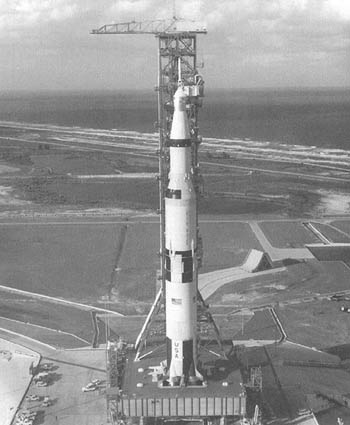

SP-4206 Stages to Saturn
Contents
To
Wernher von Braun
1912 - 1977
and the men and women
who built the Saturn

FOREWORD
.
PREFACE
.
ACKNOWLEDGMENTS
.
I. PROLOGUE
.
1.
Concepts and Origins
.
II. THE SATURN BUILDING; BLOCKS
.
2.
Aerospace Alphabet: ABMA, ARPA, MSFC
.
3.
Missions, Modes, and Manufacturing
.
III. FIRE, SMOKE, AND THUNDER: THE ENGINES
.
4.
Conventional Cryogenics: The H-1 and the F-1
.
5.
Unconventional Cryogenics: RL-10 and J-2
.
IV. BUILDING THE SATURN V
.
6.
From the S-IV to the S-IVB
.
7.
The Lower Stages: S-IC and S-ll
.
8.
From Checkout to Launch: The Quintessential Computer
.
V. COORDINATION: MEN AND MACHINES
.
9.
Managing Saturn
.
10.
The Logistics Tangle
.
Vl. STEP BY STEP
.
11.
Qualifying the Cluster Concept
.
12.
The Giant Leap
.
VII. EPILOGUE
.
13.
Legacies
APPENDIX A
- SCHEMATIC OF SATURN V.
APPENDIX B
- SATURN V PRELAUNCH - LAUNCH SEQUENCE.
APPENDIX C
- SATURN FLIGHT HISTORY.
APPENDIX D
- SATURN R&D FUNDING, HISTORY.
APPENDIX E
- SATURN V CONTRACTORS.
APPENDIX F
- LOCATION OF REMAINING, SATURN HARDWARE.
APPENDIX G
- NASA ORGANIZATION DURING APOLLO-SATURN.
APPENDIX H
- MSFC PERSONNEL DURING, APOLLO-SATURN.
NOTES
.
SOURCES AND RESEARCH MATERIAL
.
INDEX
.
AUTHOR
.
- Illustrations -
Frontispiece - the Saturn V at LC-39.
Seven photos of
Apollo 11
mission
.
Photo of Robert Goddard
.
Photo of German rocket pioneers
.
Four photos of early rockets in the U.S.
Wernher von Braun with the first seven astronauts
.
Launch of Alan Shepard on Mercury-Redstone
.
Scale comparison of U.S. manned space flight vehicles
.
Development of Saturn concepts
.
Saturn I with Mercury-Redstone and Juno II
.
President Eisenhower with first NASA Administrator T. Keith Glennan and Deputy Administrator Hugh Dryden
.
Wernher von Braun with his ABMA senior staff
.
President Eisenhower dedicates the George C. Marshall Space Flight Center
.
Abe Silverstein tours rocket facility
.
Two summary charts from the Silverstein Report
.
Early versions of the Saturn C-1 and C-5.
The stable of NASA launch vehicles
.
John Houbolt and Lunar Orbit Rendezvous
.
President Kennedy at MSFC
.
Four aerial views of MSFC
.
Photos of Michoud Operations and Mississippi Test Facility
.
Saturn I design and manufacture.
Saturn IB design and manufacture
.
Saturn engine applications
.
Turbopump for the H-1 engine
.
Specifics and systems of the H-1 engine
.
Firing and manufacture of the H-1 engine
.
Specifics and schematic of the F-1 engine.
Engine start sequence for the S-IC stage
.
F-1 engine injector plate and turhopump
.
F-1 thrust chamber and brazing furnace
.
F-1 test stand
.
F-1 engine production line
.
Centaur stage with two RL-10 engines
.
RL-10 engine specifics and systems; engine cluster mounted in the S-IV stage of Saturn I
.
J-2 engine specifics, systems, assembly, and testing
.
Saturn S-IV stages
.
Seven photos of manufacturing the S-IVB stage
.
Comparison of S-IVB stages of Saturn IB and V
.
S-IVB stage rollout and testing
.
S-IC stage Saturn V launch vehicle
.
Five photos of skin fabrication for the S-IC stage
.
Six photos of assembly and testing of the S-IC stage
.
Seven photos of fabrication and assembly of the Sell stage
.
The mission control center at KSC
.
ST-124 inertial guidance platform
.
Instrument unit specifics, systems, and assembly
.
Wernher von Braun is briefed by Mathias Siebel
.
Saturn program major sites
.
Saturn contractors
.
Two organization charts of Saturn V program
.
Photo of Arthur Rudolph
.
NASA Office of Manned Space Flight Management Council
.
Manned Space Flight Awareness Program
.
Photo of MSFC's Saturn V program control center
.
S-IC flight stage at MSFC on its transporte
r.
S-ll stage on its transporter
.
Five photos of the NASA barge fleet
.
Four photos of Saturn air transport
.
USNS Point Barrow
.
Saturn transportation equipment
.
Three views of Saturn I test flights
.
Two views of Pegasus payloads for Saturn I.
Cutaway drawing and two views of the Saturn IB launch vehicle.
AS-501, first flight-ready Saturn V
.
Launch Complex 39
.
Mobile Service Structures at LC 39
.
Apollo 8
.
Apollo 11 in flight; control room after launch; Astronaut Edwin Aldrin prepares to step onto lunar surface; lunar sample chest
.
Apollo 17 lunar roving vehicle
.
Commonality of Saturn hardware
.
Two photos of Saturn and Skylab
.
Two views of Saturn and the Apollo-Soyuz test Mission
.
Four photos of Huntsville, Alabama
.